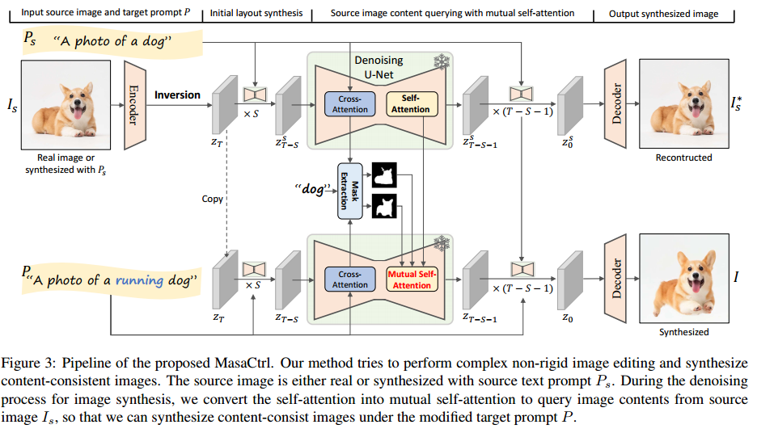
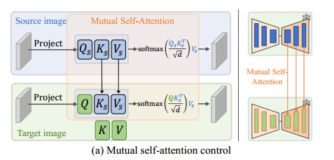
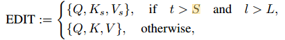
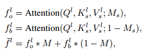

MasaCtrl
阅读时间：2023-11-17
阅读目的：知名的图像编辑算法，提出了一个新颖的观点
Abstract
现有的编辑方法要么无法在保持整体纹理和身份的同时实现有效的复杂编辑，要么需要耗时的微调来捕捉图像特定的外观。
论文提出了一种无需微调的方法，可以完成复杂的图像编辑任务，具体来说，
- MasaCtrl将扩散模型中现有的Self-attention转换为mutual self-attention（相互自注意），这样它就可以从源图像中查询相关的局部内容和纹理以获得一致性。
- 当前景和背景相似时，图像编辑过程容易发生混淆，因此论文进一步提出了一种mask引导的mutual self-attention。（mask可以从cross-attention中提取）（cross-attention 只有64 * 64怎么提取？）
Introduction
现有的编辑方法无法在保持整体纹理和身份的同时更改姿势和视图（例如让狗坐下，让鸟张开翅膀），从而导致编辑结果不一致。
Imagic可以完成这个任务，在进行复杂的编辑时保留原始特性。但是他需要微调整个T2I模型，然后优化文本embedding，以捕捉每次编辑的特定外观，这显然对于现实应用来说不切实际。
对于T2I问题，现实生活中存在大量应用场景，要求模型生成多个具有不同视图，但主体相同的图片，例如漫画生成和短视频生成。
本文提出了一种新方法，解决的核心问题是：如何在不微调的情况下进行复杂的编辑，同时让编辑前后主体身份保持一致（感觉视频领域也可以用上？）
具体来说：
- 将原本T2I的self-attention替换为mutual self-attention，这样就可以通过从源图像的query中查询相关的局部结构和纹理特征以获得一致性（解决了图像编辑和图像生成一致性的问题）
- 先对real image进行DDIM inversion，得到从源图像到真实图像的扩散过程（DP1）
- 再在成新图像（或编辑现有图像）的扩散过程中（DP2），使用DP2中self-attention的Q来查询DP1中self-attention的K和V
- 但是如果直接应用1.中的方法，会生成几乎与源图像相同的图像，并且不能符合target prompt。因此在应用mutual self-attention时，还需要注意控制去噪步长和选择具体的Unet层。
- 以上方法可以很好的应用在前景和背景不纠缠的图像上，但在前景背景相似时（例如颜色和图案相似），mutual self-attention会混淆前景背景。因此还需要进一步使用交叉注意力来提取与图像中的主要对象相关联的mask，用mask来分离前景背景，并限制前景特征仅Query源图前景，背景特征仅Query背景。
Preliminaries

mutual self-attention
方法其实非常简单：

既然图像编辑的任务，是在保留原图身份的基础上进行运动。那么在生成图片时，可以直接去原图查询（query）相关特征，即：在特定的layer和特定的T下，使用原图的K和V。
具体使用的层数如下，按照S=4，L=10的设置。

Mask-Guided Mutual Self-Attention
但是上述的方法无法分辨前景和背景，P2P告诉我们，可以利用语义cross-attention来创建mask区分源图像和目标图像中的前景背景
先以16×16的空间分辨率对所有head和layer的cross-attention map进行平均，得到N个cross-attention map。N表示文本token的数量。
这个过程可以获得前景对象相关token的平均cross-attention map，进而获得了前景mask。有了mask就可以限制生成图像仅从原图像的主体区域query相关信息

我的理解
文章开头提出问题：无法在保持整体纹理和身份的同时更改姿势和视图
随后抛出应用场景，证明用途：漫画、生成短视频等
再提出解决方案：用mutual self-attention来保证图像主体身份的同时，改变动作。
可以扩展思考的内容主要有两条：
- mutual self-attention可在保持特色、纹理和身份的同时改变姿态、视图、结构。似乎也可以用在短视频领域，因为短视频正面临编辑对象闪烁的问题。它（imagic + mutual self-attention 可能可以完成一个简单的动作生成）
- 使用cross-attention map来提取前景背景的掩模，完成前景背景分离（可以用于解耦，联想到ACR中的背景前景选取内容）